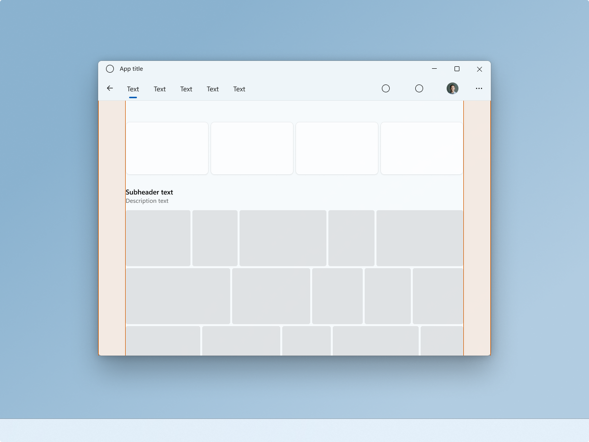
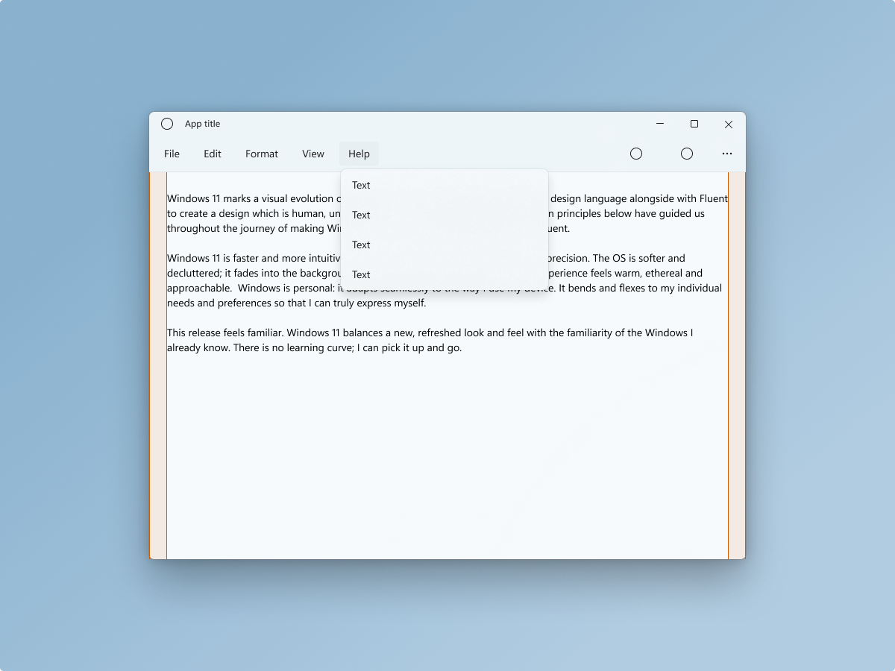
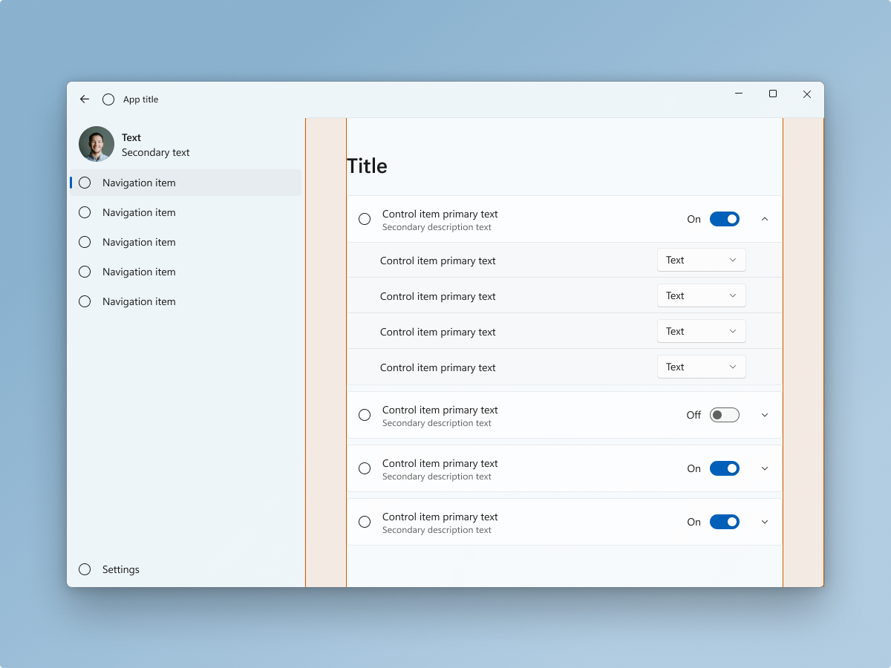
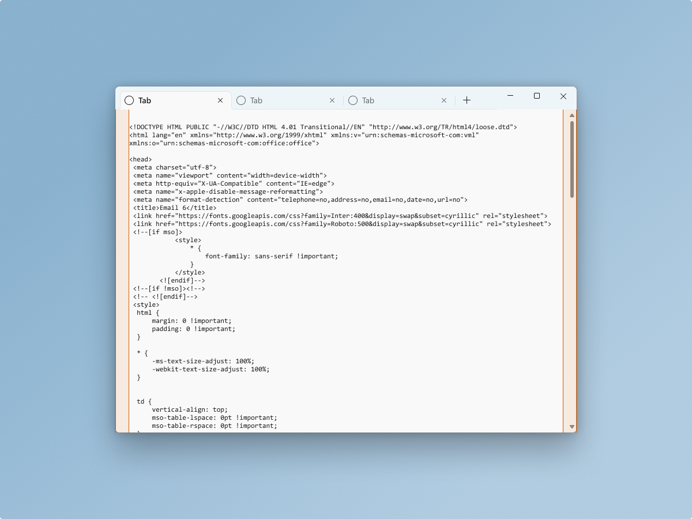

Windows app silhouettes
Silhouettes indicate a common pattern of relationships between elements such as app layering, menus, navigation, commanding and content areas. This article focuses on the common silhouettes as used in several Windows in-box apps.
Also refer to Content Basics for common arrangements of content and controls.
Top navigation silhouette

A NavigationView can be used at the top of the app’s content layer, building a connection with the content below. Note the location of user identity/person/picture control when using top navigation.
Placing navigation on the same row as commands can be useful when trying to maximize the amount of vertical space for the content below.
Content margins can vary. This example uses 56epx margins, complementing large pieces of media. Use smaller margins for smaller/tighter content needs.
In Windows 11, Photos is a good example of an app that uses a top navigation silhouette.
Menu bar silhouette

A MenuBar can be used as part of the of the base layer along with a CommandBar. This brings more focus to the content area’s primary task, in this case composition and editing.
This example depicts a text editor using 12epx margins to compliment the utility of the app.
In Windows 11, Notepad is a good example of an app that uses a menu bar silhouette.
Left navigation silhouette

NavigationView controls automatically rests on the app's base layer. This brings more focus to the content area’s primary task. Note the location of user identity/person/picture control when using left navigation.
Content margins can vary. This example uses 56epx margins to compliment the cohesion of the content within the expanders. Use smaller margins when content cohesion is less of a concern, because other design elements reinforce cohesion, content is not nested in expanders, or content should not logically be grouped together.
In Windows 11, Settings is a good example of an app that uses a left navigation silhouette.
Tab View Silhouette

A TabView can integrate with the app’s base layer, and title barcontrol. This brings more focus to the content area’s primary task, in this case code composition and editing.
This example depicts a text editor using 12epx margins to compliment the utility of the app.
In Windows 11, Terminal is a good example of an app that uses a tab view silhouette.